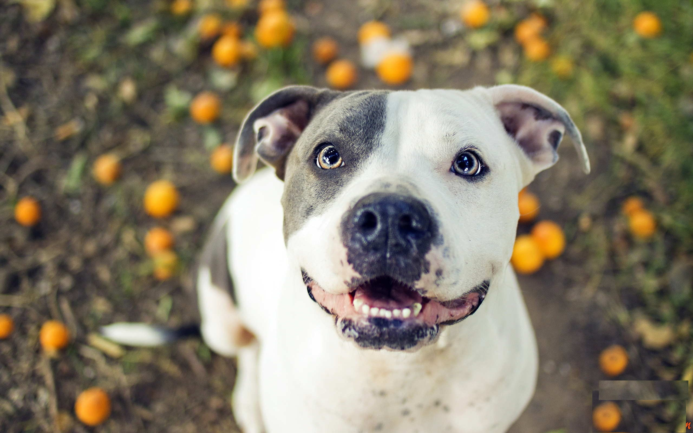
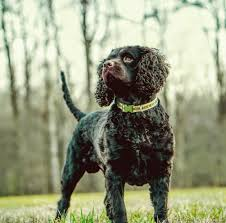
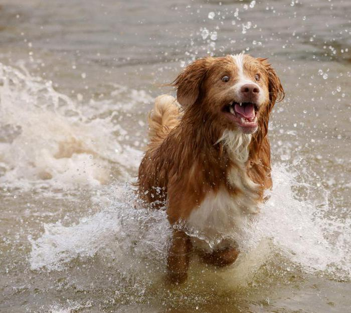
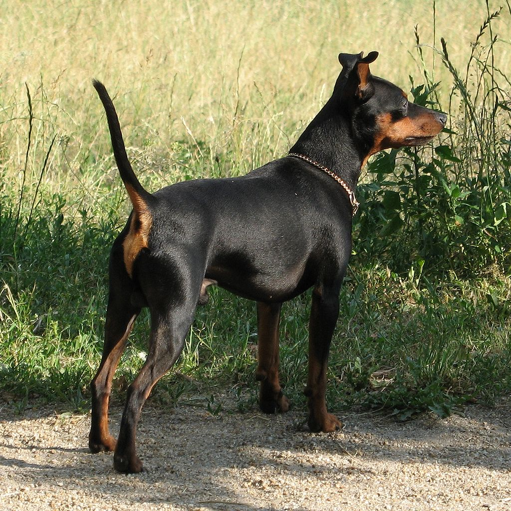

Amerikieciu stafordsyro terjeras
Nors Stafordšyro terjeras raumeningas, jis vis dėlto yra vikrus ir grakštus, kojos ne per daug ilgos, kontūras nepanašus į lenktyninio šuns.
Amerikieciu vandens spanielis
Medžioklinis šuo , puikiai dirba pelkėse, liūnuose, aukštuose brūzgynuose, upėse.
Naujosios Škotijos Retriveris
Šie retriveriai yra vidutinio dydžio aktyvūs šunys, pasižymintys išskirtinai plunksniška uodega ir plėvėtomis kojomis.
Nykštukinis Pinčeris
Nykštukiniai pinčeriai išvesti prieš keletą šimtmečių iš vokiečių pinčerių.